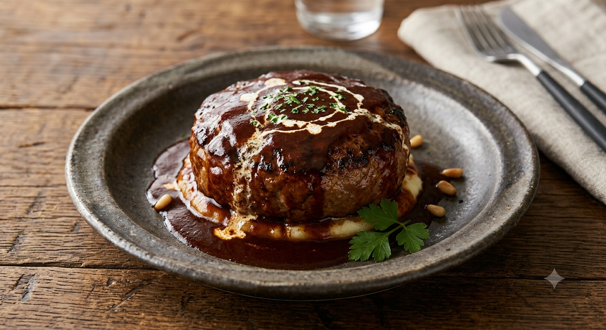
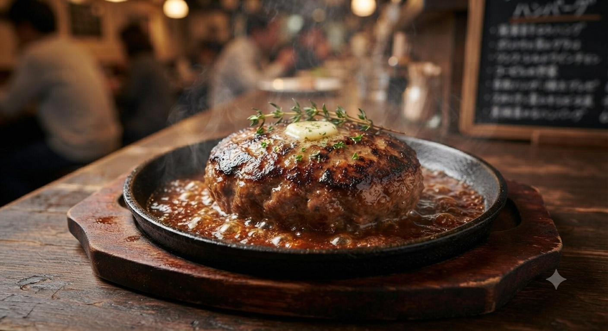
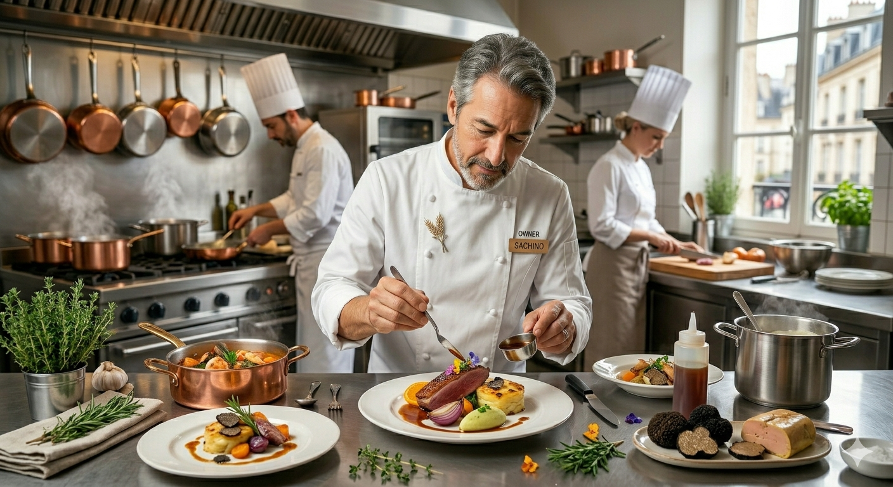
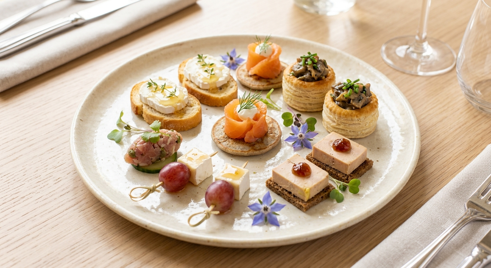

Bistro Paris 21-ku
山形・木の実町。大人たちが夜な夜な集う、隠れ家ビストロ。
Scroll

看板メニューの「ハンバーグガーリックソース」は、肉の旨みを閉じ込める手ごねの技と、仲までじっくりソースが染み渡る独自の調理法が自慢です。ハーブの香りがふわりと抜け、一口ごとに幸福感が広がります。

2015年、山形市「やまがたチャレンジ創業応援事業」にて選定。店主・涼美由起子が追求したのは、気取らないけれど本物、そんなフレンチビストロの形です。
移転を経て、より落ち着いた空間となった現在の店舗でも、素材の味を活かした丁寧な調理と、温かみのあるおもてなしの心は変わりません。
デートや記念日に最適な、洗練された空間
ハーブが香る、こだわり肉料理の数々
駅近ながら、静寂に包まれた隠れ家的立地

パリ21区の味をご家庭でも。期待の新しいサービスがスタートします。
看板メニューの「手ごねハンバーグ」をはじめとする定番洋食メニューをおうちで手軽に。食後を彩るパティシエ特選のオリジナルデザートもセットでお持ち帰りいただけます。
「ふわふわ食感」と「ハーブ薫るガーリックソース」をご家庭で再現できる冷凍便。全国発送対応で、遠方のご家族や大切な方へのギフトにも最適です。